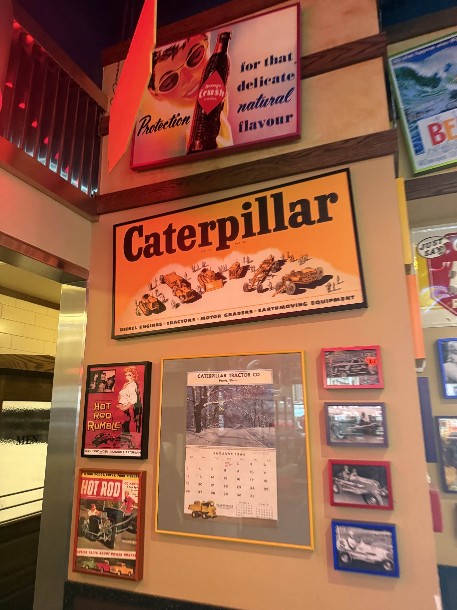
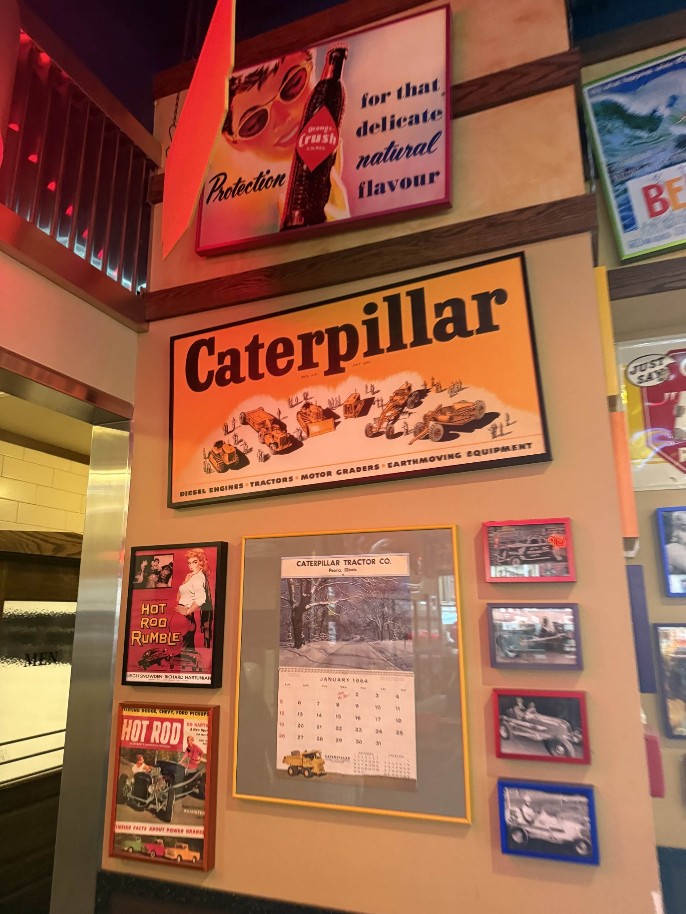

Caterpillar Experience
I spent two rotations at Caterpillar Inc., working on structural simulations and later embedded controls. These roles gave me insight into both the virtual product development and on‑vehicle software that make heavy equipment reliable and efficient.
Simulations Intern
May – Aug 2025
Performed finite element analyses for engine and battery management cooling components using NX and NASTRAN. Conducted a lifting study on cooling modules and documented best practices in setting up simulations to reduce time spent and improve model fidelity.
More about this roleEmbedded Controls Co‑Op
Aug 2025 – Present
Joined the Integrated Product Systems(IPS) team to develop traction, braking and positioning algorithms in Simulink and C. Integrated software on real vehicles and performed hardware‑in‑the‑loop testing.
More about this roleGallery
 

Shared Skills & Tools
- Finite element & CFD analysis (NASTRAN, NX)
- Model‑based design using MATLAB/Simulink
- Embedded C development & testing
- Version control with Git